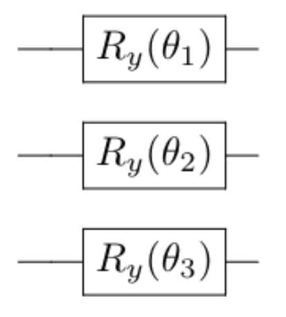
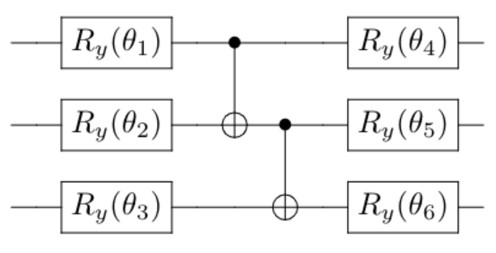

We discuss here three paths for the second project. Tentative deadline June 7.
The report should also be styled as a scientific report. The guidelines we have established at https://github.com/CompPhysics/AdvancedMachineLearning/tree/main/doc/Projects/EvaluationGrading could be useful in structuring your report. We have also added a lecture set by Anne Ruimy (director of EDP journals) on how to write effective titles and abstracts. See https://github.com/CompPhysics/AdvancedMachineLearning/tree/main/doc/Projects/WritingAbstracts for these lectures. Finally, at https://github.com/CompPhysics/AdvancedMachineLearning/tree/main/doc/Projects/2023/ProjectExamples you can find different examples of previous reports. See also the literature suggestions below.
We would like to suggest three different paths (select only one of these). They are
These projects are described here.
Why do people care about "Quantum Machine Learning", or "Quantum Computing" in general? A common observation that motivates quantum computing, although it does not tell the whole story, is the striking fact than quantum information of a quantum system is in a sense larger than the classical information of a comparable classical system. In the case of bits and qubits, \( n \) classical bits allows you to store the value of \( n \) boolean variables \( a \in [0,1] \), whereas you need \( 2^n \) amplitudes \( \alpha \in \mathbb{C} \) to describe the state of \( n \) quantum bits, or qubits. In other words, the (Hilbert )space in which the qubits live in exponentially bigger than that of the classical counterpart. In the context of parameterized quantum circuits, one may prepare a state in the exponentially large Hilbert space by applying some simple quantum operations to a set qubits that are all initialized in the zero-state.

By varying \( \theta_i \in [0, 2\pi] \), one can attain different states. A crucial thing to note is that we are not able to prepare an arbitrary state using this ansatz as it much too constrained and simple: The exponentially large space is not available to us. One might try to remedy this by introducing a more complex ansatz:

We now have an ansatz whose number of operations scales polynomially in the number of qubits(in this case quadratic), and the added complexity enables us to reach a greater part of Hilbert space. Still, it is only a polynomially large part of it, which is vanishingly small compared to its full size. To have access to the whole space, one would in fact need to perform exponentially many operations, which is practically intractable to do (Nielsen, 4.5.4).
Does this mean that the supposed power of quantum computation is practically inaccessible to us? No. Even though we only reach a very small part of Hilbert space using "cheap" ansatzes, the states we do reach might be very useful for solving a particular problem. Moreover, these states might be classically intractable to compute (source to come), meaning the information they represent is not practical to determine using classical computers. They are however efficiently prepared using quantum computers, as the number of quantum operations needed to be applied is by construction only polynomial.
How can one leverage this in a machine learning setting? A common approach is to use variants of the previous ansatzes to encode features to qubits by performing rotations, thus embedding the data in a high dimensional quantum state. Subsequent parameterized operations on the qubits then applies powerful transformations to the embedded data in a high dimensional space. Such methods are often described as quantum kernel methods, because of their similarity to classical kernel methods in machine learning.
For this project, you will perform quantum machine learning on the two first targets of Scikit learn iris data set. The data can be obtained the following way
from sklearn import datasets
import numpy as np
iris = datasets.load_iris()
x = iris.data
y = iris.target
idx = np.where(y < 2) # we only take the first two targets.
x = x[idx,:]
y = y[idx]
\( x \) is the feature matrix and \( y \) are the targets.
For this task you will consider a simple way of encoding a randomly generated data set sample into a quantum state:
import qiskit as qk
import numpy as np
np.random.seed(42)
p = 2 #number of features
data_register = qk.QuantumRegister(p)
classical_register = qk.ClassicalRegister(1)
circuit = qk.QuantumCircuit(data_register, classical_register)
sample = np.random.uniform(size=p)
target = np.random.uniform(size=1)
for feature_idx in range(p):
circuit.h(data_register[feature_idx])
circuit.rz(2*np.pi*sample[feature_idx],data_register[feature_idx])
print(circuit)
The above code shows how a randomly generated data sample of \( p=2 \) features are encoded into a quantum state on two qubits utilizing Qiskit. Each feature is encoded into a respective qubit utilizing a \( R_y(\theta) \) gate. The features are scaled with \( 2\pi \) to represent rotation angles (the \( R_y(\theta) \) gate performs a rotation). The classical register will be used later for storing the measured value of the circuit. print(circuit) can be utilized at any point to see what the circuit looks like.
Your task is to get familiar with the functionality utilized in the above example and implement your own function to encode the features of the iris data set to a quantum state.
After the quantum state has been encoded with the information of a data set sample, one needs extend the circuit with operations that process the state in a way that allows us to infer the target data. This can be done by introducing quantum gates that are dependant on learnable parameters \( \boldsymbol{\theta} \). We will do this in a similar fashion as for the encoding of the features:
n_params = 4
theta = 2*np.pi*np.random.uniform(size=n_params)
circuit.ry(theta[0], data_register[0])
circuit.ry(theta[1], data_register[1])
circuit.cx(data_register[0], data_register[1])
circuit.ry(theta[2], data_register[0])
circuit.ry(theta[3], data_register[1])
circuit.cx(data_register[0], data_register[1])
print(circuit)
The above parameterization of the quantum state is what we will refer to as the 'ansatz'. Your task is again to familiarize yourself with the functionality utilized in the above example and implement your own ansatz to be utilized together with the features of the iris data set. The number of learnable parameters 'theta' should be arbitrary.
The next step is to generate a prediction from our quantum machine learning model. This is done by performing a measurement on the quantum state:
circuit.measure(data_register[-1],classical_register[0])
shots=1000
job = qk.execute(circuit,
backend=qk.Aer.get_backend('qasm_simulator'),
shots=shots,
seed_simulator=42
)
results = job.result()
results = results.get_counts(circuit)
prediction = 0
for key,value in results.items():
if key == '1':
prediction += value
prediction/=shots
print('Prediction:',prediction,'Target:',target[0])
Prediction: 0.285 Target: 0.7319939418114051
In the above example, we are first applying a measurement operation on the final qubit in the circuit, and we are interpreting our prediction as the probability that this qubit is in the \( \vert 1\rangle \) state. Make sure all the steps in the example are understood.
Implement your own function that generates a prediction by measuring one of the qubits.
Now it is time to put together all of the above steps. Ideally, you should make a class or a function that given a feature matrix of \( n \) samples and an arbitrary number of model parameters, returns a vector of \( n \) outputs. For example:
n = 100 #number of samples
p = 4 #number of features
theta = np.random.uniform(size=20) #array of model parameters
X = np.random.uniform(size=(n,p)) #design matrix
y_pred = model(X,theta) #prediction, shape (n)
We will now deal with how to train the model:
Since the model with random initial parameters is no good for inference, we need to optimize the parameters in order to yield good results, as is the usual with machine learning.
Since we are dealing with classification, we will use cross-entropy as the loss function
$$ \begin{equation*} L = -\sum_{i=1}^{n}{y_i \ln{f(x_i;\boldsymbol{\theta})}}, \end{equation*} $$where \( y_i \) are the target labels, and \( f(\boldsymbol{x}_i;\boldsymbol{\theta}) \) is the output of our model for a given sample \( \boldsymbol{x}_i \) and parameterization \( \boldsymbol{\theta}) \). We calculate the gradiant by taking the derivative of the loss with respect to the parameters
$$ \begin{equation*} \frac{\partial}{\partial \boldsymbol{\theta}_k}L = \sum_{i=1}^{n}{\frac{f_i - y_i}{f_i(1 - f_i)}} \frac{\partial}{\partial \boldsymbol{\theta}_k}f_i, \end{equation*} $$where \( f_i = f(x_i;\boldsymbol{\theta}) \) for clarity. The only term we do not know how to calculate is \( \frac{\partial}{\partial \boldsymbol{\theta}_k}f(x_i;\boldsymbol{\theta}) \), but it turns out there is a simple trick to do this, the so-called parameter shift-rule https://pennylane.ai/qml/glossary/parameter_shift/. To calculate the derivative of the model output, we need to evaluate the model twice with the respective parameter shifted by a value \( \frac{\pi}{2} \) up and down. The two resulting outputs are then put together to yield the derivative
$$ \begin{equation*} \frac{\partial f(x_i; \theta_1, \theta_2, \dots, \theta_k)}{\partial \theta_j} = \frac{f(x_i; \theta_1, \theta_2, \dots, \theta_j + \pi /2, \dots, \theta_k) -f(x_i; \theta_1, \theta_2, \dots, \theta_j - \pi /2, \dots, \theta_k)}{2} \end{equation*} $$Train your model by utilizing the Parameter Shift-Rule and some gradient descent algorithm. Compare your results with for example logistic regression.
Regular gradient descent does the job, but it is often outperformed by momentum based optimizers like Adam.
Change/add more gates to the encoder and the parameterized ansatz to produce a more complex model (See for example figure 4 and figure 5 in https://arxiv.org/abs/2011.00027 for inspiration). Train these new models on the iris data set. How do they compare? As a more challenging problem, you may train on the first few features of the Breast Cancer Data as well to see how the more powerful model performs.
from sklearn.datasets import load_breast_cancer
data = load_breast_cancer()
x = data.data #features
y = data.target #targets
The following articles and books (with codes) are relevant here:
Here follows a brief recipe and recommendation on how to write a report for each project.
The preferred format for the report is a PDF file. You can also use DOC or postscript formats or as an ipython notebook file. As programming language we prefer that you choose between C/C++, Fortran2008 or Python. The following prescription should be followed when preparing the report:
Finally, we encourage you to collaborate. Optimal working groups consist of 2-3 students. You can then hand in a common report.